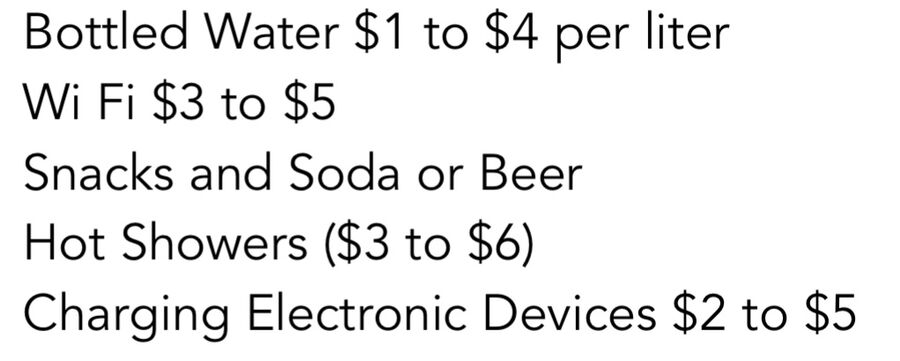
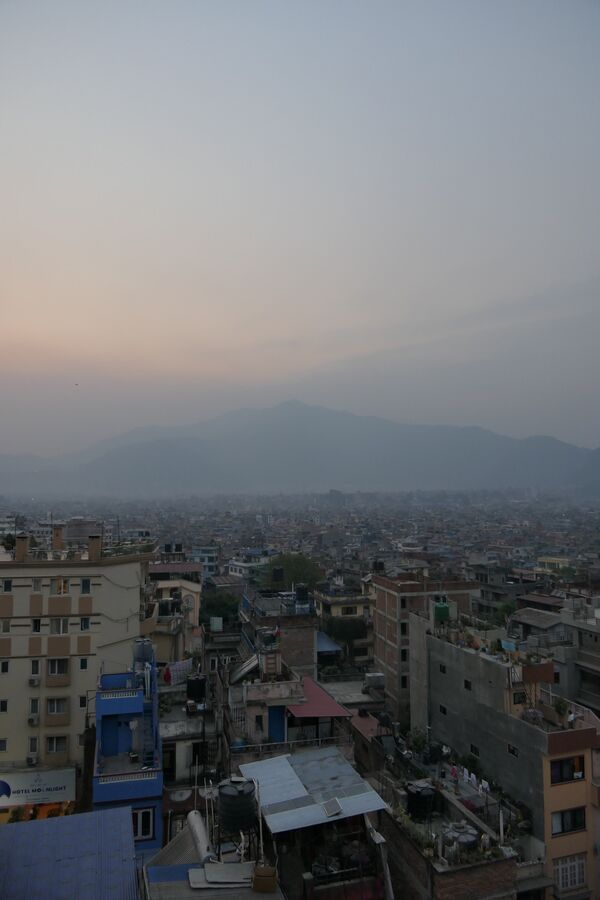

18.04.2022. Der Flug von Istanbul nach Kathmandu dauerte ungefähr 7 Stunden und war zeitweise ganz schön holprig. Kurz hinter Istanbul, wo wir bereits in strömenden Regen losgeflogen waren, ging es bereits an, sehr wackelig zu werden. Das blieb dann auch gut 2 Stunden so. Zum Glück konnten wir beide schlafen.

In Kathmandu war das Wetter dann mit ca. 30 Grad schon sehr warm aber diesig. Landung und Transfer zum Flughafengebäude verlief reibungslos. Im Flughafen mussten wir dann an einem von mehreren Terminals ein Visum kaufen. Kosten für bis zu 30 Tagen: je 50 USD. Die Schlange an dem Schalter, wo man die Gebühr bezahlen muss, war leider lang und langsam.

Ich wechselte noch Euro in Rupien, damit wir auf der Tour alles gut bezahlen können. Kost und Logis ist zwar inklusive, aber Wasser, Strom und evtl. die eine oder andere Dusche kostet Geld. Und der Preis steigt mit der erreichten Höhe. 1 Euro sind aktuell (April 2022) übrigens ca. 130 Rupien.

Die Einreise war dann auch recht langsam. Man lässt es hier gerne gemütlich angehen. Man muss digitale Fingerabdrücke abgeben und es wird ein Foto gemacht. Natürlich muss man auch sein Impfzertifikat vorzeigen. Was niemand benötige war indes das International Traveller Arrival Formular, das ich in Deutschland schon ausfüllen sollte und in Papierform vorlegte.
Auf dem Weg zu den Kofferbändern mussten wir interessanterweise durch eine Gepäckkontrolle. Dahinter lagen dann schon unsere Taschen neben dem Band. Alles nicht mehr so chaotisch wie 2009, wo es in meiner Erinnerung eigentlich nur ein einziges Band gab und die Mitarbeiter darum einfach jede Tasche vom Band nahmen und irgendwo hinstapelten. Was das Chaos komplett machte.
Mit den Taschen in der Hand machten wir uns auf zu einem Schalter eines nationalen Mobilfunkbetreibers. Dort erstanden wir für je 1.200 Rupien SIM-Karten mit einer Dauer von 28 Tagen und 28 GB Datenvolumen. An diesem Schalter herrschte ebenfalls Chaos pur. Die 3 Mitarbeiter/innen – allesamt wohl aus Indien stammend – versorgten mit ihrem recht stark indisch ausgeprägten Englisch 4-5 Kunden gleichzeitig. Da fällt mir immer wieder auf, dass nicht nur ich dieses Englisch kaum verstehen kann, nein, auch indische Kunden selbst können es nicht verstehen. Übrigens: Passfoto mitnehmen für den Antrag.
Vor dem Flughafen stand dann schon unser Transfer und es ging in rasanter Fahrt durch das Zentrum von Kathmandu zum Ramada Encore Hotel im urigen Stadtteil Thamel.
Vieles hier erinnert an ein vergangenes, chaotisches Istanbul. Sehr viele kleine Geschäfte des täglichen Bedarfs reihen sich aneinander an. Dazwischen immer wieder kleinere Werkstätten, die etwas wie Generationen zuvor herstellen oder reparieren. Ein Gewusel überall. Leider auch viel Dreck. Auf den Straßen fahren Kleinwagen oder Motorräder. Anders kommt man hier auch kaum durch. Ach ja, und hier ist Linksverkehr wie in England.
Das Hotel ist gut und gehört sicherlich zu den besseren hier in Kathmandu. In Deutschland würde es 3 Sterne bekommen. Wir wurden schon ca. 100m vor dem Hotel von einem Mitarbeiter der Agentur Himalayanwonders empfangen, weil der Transferbus nicht weiterfahren konnte. Ein LKW versperrte einfach den Rest des Weges. So stiegen wir aus und gingen den Rest zu Fuss.
Wir waren dann – nach unserer Landung um 11 Uhr – also gegen 14 Uhr am Hotel und sollten uns um 16 Uhr in der Lobby treffen. Im Zimmer angekommen packten wir ein paar Sachen aus, ruhten uns etwas aus und machten uns frisch.
Um 16 Uhr begrüßten uns dann David, Cofounder von Himalayanwonders, und seine Mitarbeiterin Brinley – beide aus den USA stammend – in der Lobby. Sie erklärten uns noch einmal den Ablauf und wiesen uns auf verschiedene Dinge hin. Es war nicht viel Neues, aber es beruhigt einen doch, wenn die Dinge vor Ort noch einmal bestätigt werden. Abholung morgen (19.04.) ist 4:30 Uhr. Morgens. Das heißt: Heute früh ins Bett.
Wir waren dann noch etwas essen, und zwar in dem indischen Restaurant The three Eyes, welches und Brinley empfohlen hatte. Es war alles sehr lecker. Aber langsam überkam uns auch die Müdigkeit. Deshalb machten wir nur noch einen kleinen Spaziergang durch Thamel und kehrten gegen 19 Uhr zum Hotel zurück. Dort genossen wir auf der Dachterrasse bei einer Tasse Kaffee noch den Sonnenuntergang und telefonierten mit unseren Lieben.

Zurück im Zimmer haben wir dann noch einmal unsere Taschen umgepackt, die Kleidung für morgen herausgesucht, den Tagesrucksack befüllt und eine Tasche, die bis zur Abreise bei der Agentur bleiben soll, fertig gemacht.
Und jetzt, um 22:25 Uhr, mache ich Schluss für heute.